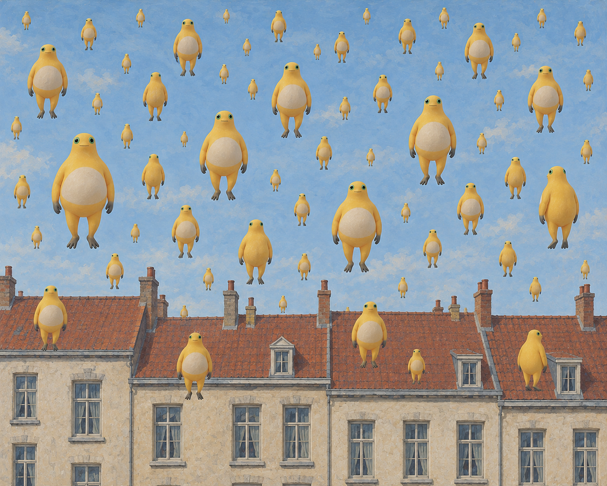

← 创作手记2026-10-27 · 画面里的问题与取舍
按留存作品与创作记录整理的阶段手记；原图日期沿用实际创作日，入馆时间另列，不把本次整理称为当天新增创作或全天总结。研究与淘汰图不作成品展示。
悬停的星期二
奶蛙像雨点一样排在普通房屋前，远近大小重复着，却看不出是在落下还是停住。鲜黄的身体让整片天空变得密集，日常街景忽然失去平常的重力。

悬停的星期二 · V2 · 采用的定稿版本；具体来源与权利另列。来源与权利
本项目的AI辅助二维创作，不代表官方奶龙、参考艺术家或收藏机构。奶蛙为社区衍生形象；角色与参考作品权利归各自权利人。本馆不授予第三方内容开放许可，参考原图仅提供来源链接。